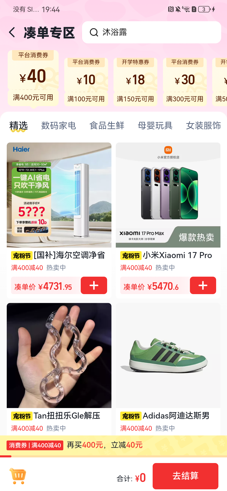
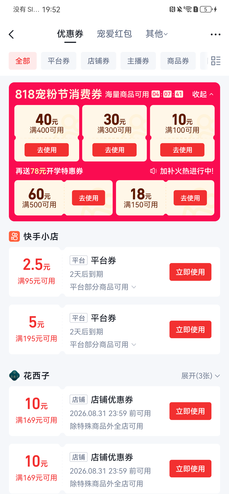
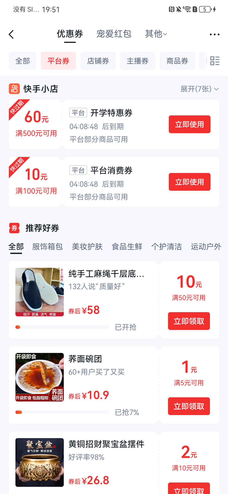
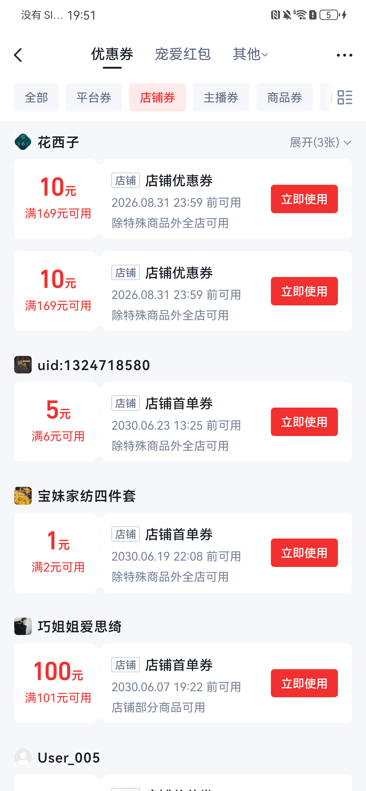
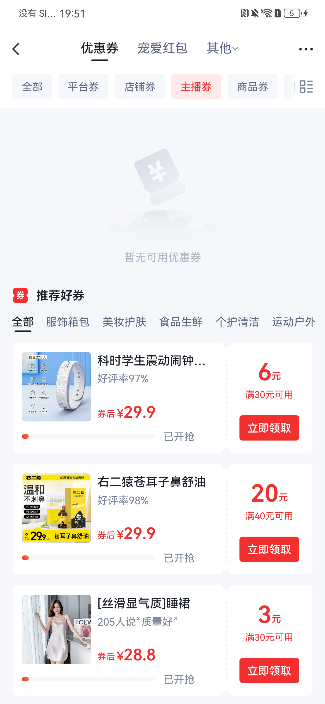
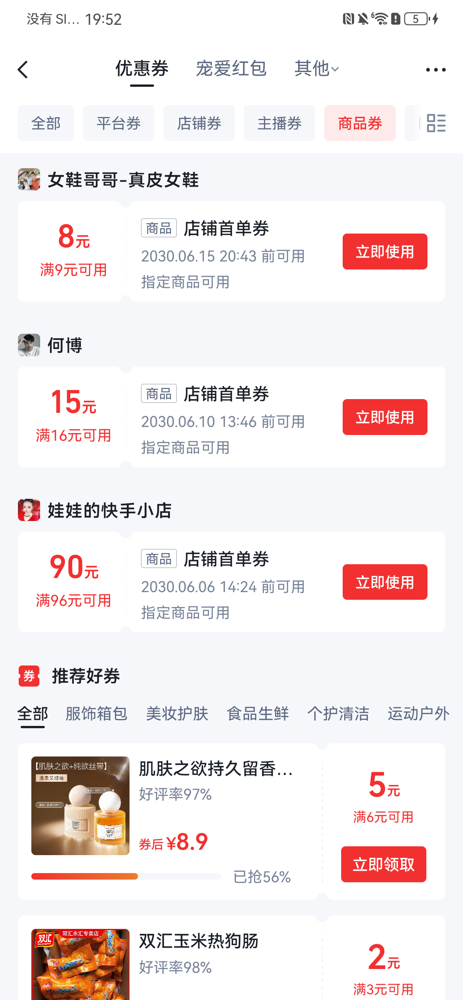
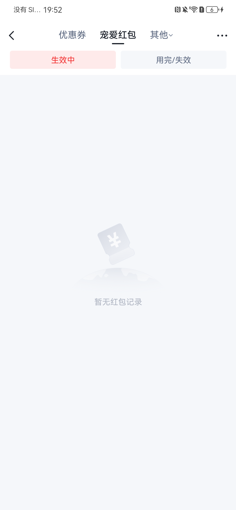
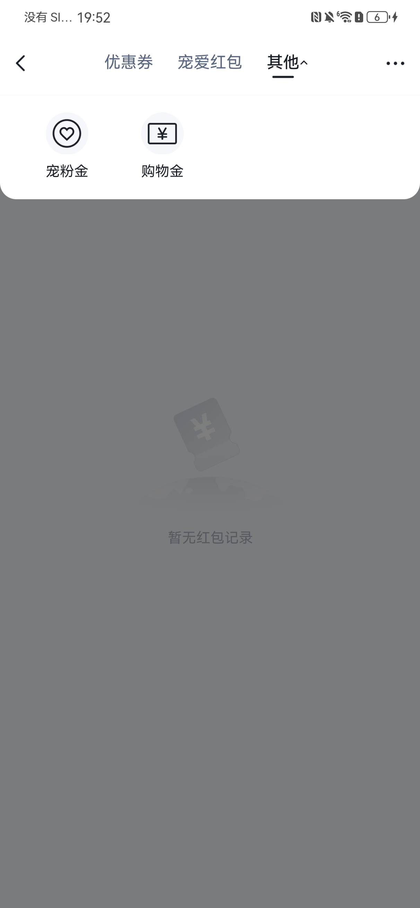

Case 1：818宠粉节消费券楼层收起/展开
PASS- 初始展开状态右上角显示“收起”，券卡完整展示。
- 点击“收起”后楼层折叠，按钮切换为“展开”。
- 点击“展开”后券卡恢复，按钮切换回“收起”。
- 最终复核通过，页面停留在展开状态。
过程证据：Case 1 自动化执行日志
执行日期：2026-08-27 ｜ 执行方式：本地 Android 实机 + 页面状态取证
测试入口：kwai://krn?bundleId=KwaishopMarketingCouponBenefitsApp&componentName=CouponList&themeStyle=1
| 应用 | 快手主站（com.smile.gifmaker） | 设备 | DCO_AL00 / GBJ0223111002495 |
|---|---|---|---|
| 页面容器 | KwaiRnActivity | KRN | KwaishopMarketingCouponBenefitsApp / CouponList |
| 验证范围 | 券和福利页楼层交互、券使用入口跳转与返回、券分类 Tab、红包与其他菜单 | ||
| 安全边界 | 未领券、未加购、未提交订单、未结算、未支付 | ||
过程证据：Case 1 自动化执行日志

| Tab | 实际结果 | 结论 |
|---|---|---|
| 全部 | 选中态正常，展示 818 消费券楼层及多类型券列表。 | 通过 |
| 平台券 | 选中态正常，刷新为平台券列表。 | 通过 |
| 店铺券 | 选中态正常，刷新为按店铺分组的券列表。 | 通过 |
| 主播券 | 选中态正常，展示“暂无可用优惠券”标准空状态及推荐内容。 | 通过 |
| 商品券 | 选中态正常，刷新为指定商品可用券列表。 | 通过 |







KwaishopMarketingLuckybagApp/Index 不能稳定提供消费券楼层，已停止作为默认入口。本报告仅覆盖本机当前账号和当前页面版本的功能/UI 验证，不覆盖接口正确性、埋点、性能、多机型兼容性及交易链路。
Case 1–4 全部通过。 券楼层交互、去使用跳转/返回、五个券分类 Tab、宠爱红包和其他菜单均能正常响应；主播券与宠爱红包无数据时展示了完整的标准空状态，未发现白屏、卡死、错误提示或状态错乱。
任务结束时页面已恢复到“优惠券 - 全部”，818宠粉节消费券楼层保持展开。